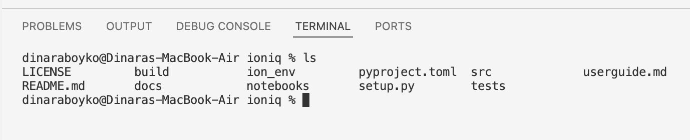
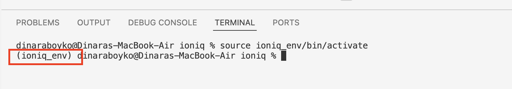

Install Ionique
This guide walks you through the steps to download, set up, and install the Ionique package using a virtual environment.
1. Download the Ionique Repository
Open the WanunuLab GitHub repository:
https://github.com/wanunulab/ioniqueClick the green Code button and choose Download ZIP.

Unzip the folder and move it to your desired location (e.g., Desktop or Documents).
2. Open the Ionique Folder in VS Code
Launch the VS Code application.
Click File > Open… and select the unzipped
ioniquefolder.

Now your working directory in VS Code is set to the ionique folder.
3. Set Up a Virtual Environment
A virtual environment is an isolated workspace for installing project-specific dependencies.
Learn more: Python Virtual Environments
Step 1: Open Terminal in VS Code
Go to the top menu and click Terminal > New Terminal.

Step 2: Confirm You’re in the Correct Directory
Use the following command:
ls
You should see the contents of the ionique folder.

Step 3: Create and Activate the Environment
Run the command:
python -m venv ionique_env
Note: On some systems (especially Linux/macOS), you may need to use
python3andpip3instead ofpythonandpip.
Then activate it:
Linux / macOS:
source ionique_env/bin/activate
Windows:
ionique_env\Scripts\activate
If activated successfully, you’ll see (ionique_env) appear before your username in the terminal.

4. Install the Ionique Package
Run the command:
pip install .
Wait a few minutes while dependencies install.

If you see a similar message, congratulations — you’ve successfully installed the Ionique package!
5. (Optional) Install JupyterLab
To run data analysis in an interactive interface like Jupyter Notebook, install JupyterLab while the virtual environment is still active:
pip install jupyterlab
6. Deactivate the Environment
When you’re done, deactivate the virtual environment by typing:
deactivate
It’s good practice to activate your virtual environment when working on a project and deactivate it when you’re finished.